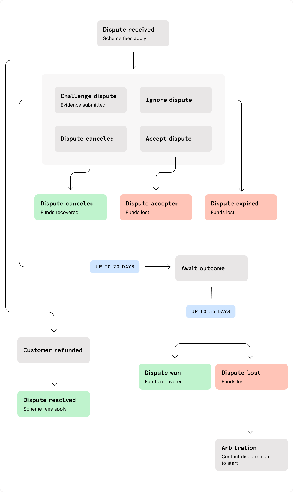

Fraud Management
Fraudsters specifically target new merchants during their first 30–90 days, assuming security models are not yet fully calibrated. Follow these pillars to protect your processing.
Mandatory 3D Secure (3DS)
Policy: All transactions must be processed with 3D Secure. 3DS adds an authentication layer that helps verify the cardholder's identity with the issuing bank. It is your primary line of defense against unauthorized card use and provides significant protection against fraud-related chargebacks.
Identity-to-Payment (I2P) Anchoring
Standard authorization responses do not return the cardholder's name. This allows fraudsters to pass KYC as "User A" but pay with a card belonging to "User B."
Account Name Inquiry (ANI)
Use ANI to proactively send the KYC-verified Legal Name to the bank for verification.
Execution
ANI can only be performed on a $0 Authorization. We recommend you implement this step as a mandatory part of the transaction flow (e.g., during card onboarding or immediately before the first purchase) to ensure identity alignment before funds are captured.
Hard Block Policy
If the bank returns a "No Match" result for the name, the transaction should be automatically declined.
Device Intelligence
Risk SDK (Mandatory)
Regardless of your integration method, you must integrate the Checkout Risk SDKs on your front-end. It is the only way to track physical hardware IDs and spot professional "fraud farms" using multiple accounts on one device.
The "Cold Start" Risk Model
Protect your launch with temporary "Speed-Bumps" for new accounts:
- Tiered Limits: Keep transaction caps low (e.g., $100) for a user's first week.
- Withdrawal Holds: For high-liquidity assets (like crypto), implement a 24–48 hour hold on payouts for new users. This allows time for Early Warning (TC40) reports to arrive before the funds are gone.
Proactive Ratio Protection
Rapid Dispute Resolution (RDR)
Set automated rules to refund disputes instantly. This kills the dispute before it hits your chargeback ratio.
Webhook Automation
Configure your system to freeze accounts and cancel pending orders the moment a Fraud Reported (TC40 or SAFE) webhook is received.
Metadata
We recommend passing additional Metadata in your payment requests. This allows us and our risk team to better monitor your traffic and identify more fraud and cross-check against broader network patterns on our end.
Key fields that would provide the most impact include:
Identity & KYC Insights
kyc_level: (e.g., Tier_1 vs Tier_2) To flag high-value attempts from unverified users.user_age: (Integer) The physical age of the person (from their ID), critical for spotting "Generational Fraud" patterns, such as senior exploitation (scams) or young/mule activity.account_age: (In days) Crucial for spotting "hit and run" attacks.is_first_purchase: (Boolean) Should remain true until the user has a successfully captured payment. This ensures high scrutiny remains even if initial attempts fail or decline.document_type: Helps us identify if a specific forged document type is being cycled through the platform.
Account Integrity
email/phone_verified: (Boolean) Fraudsters often use unverified or VoIP details.total_successful_orders: Helps us "Green-light" your loyal, low-risk customers.is_trusted_customer: (Boolean) Your internal flag for high-reputation users. We recommend setting this only after a user has 3+ successful payments over a 45-day window with consistent device/IP signatures.
Transaction Context
asset_type: (e.g., BTC, USDT) Helps us monitor liquidity-driven fraud trends.
Fraud Detection
Our Fraud Detection solution gives you the power to control what happens to the payments you process. Payments will be assessed against the risk assessment rules that you set in the Dashboard → Fraud - Strategy page.
Contact us for a demo session.
Disputes Management
A dispute, or chargeback, occurs when a customer questions the validity of a transaction and contacts their bank (the issuer) to get a refund.
The dispute process begins when a transaction is questioned by the cardholder. It then goes through a number of stages before it is resolved. Refer to the diagram.

You can easily manage disputes from Dashboard → Disputes.